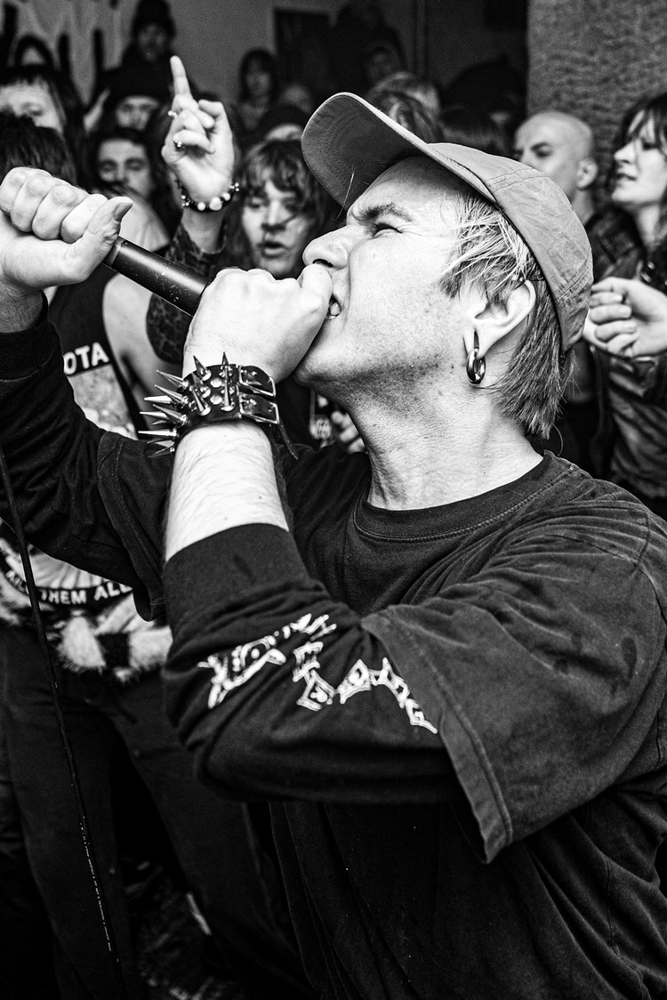

USER
Wakacje 2024 -
Wakacje 2024 -

fot. Piotr Królikiewicz
"Rygorystyczny hardcore trzepiący jak zastrzyk cukru i kofeiny po wypiciu energola na pusty żołądek. User to ciężka do okiełznania swołocz, która podpali biuro, w którym pracujesz, wypije twoje piwo i napluje ci pod nogi. Z okresu edukacji najlepiej pamiętają wagary w oparach tytoniowego dymu. Stara szkoła ale grana po nowemu. Jeśli lubisz Government Issue i Flipper oraz zdażyło ci się nie ustąpić miejsca płaczącemu dziecku w komunikacji miejskiej to się dogadacie. Na koncercie dzicz i od razu"
Karol
Członkowie
Dzenia GPT - perkusjaMichael Unconscious - wokal
Alex M. - gitara
Andrzej Paradise - bas